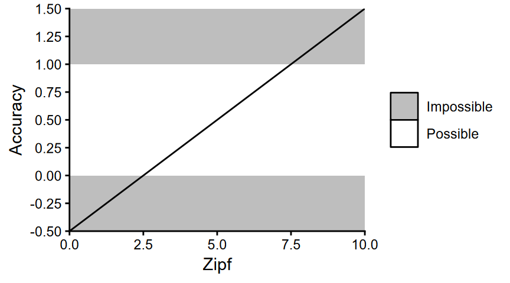
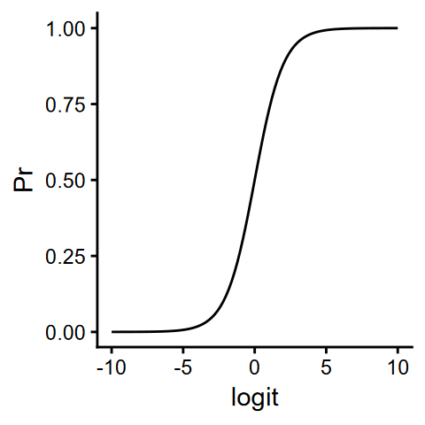
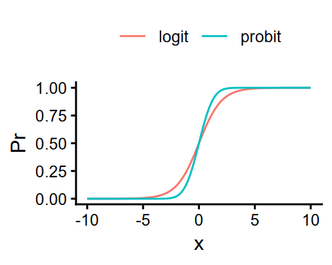
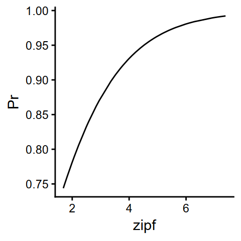
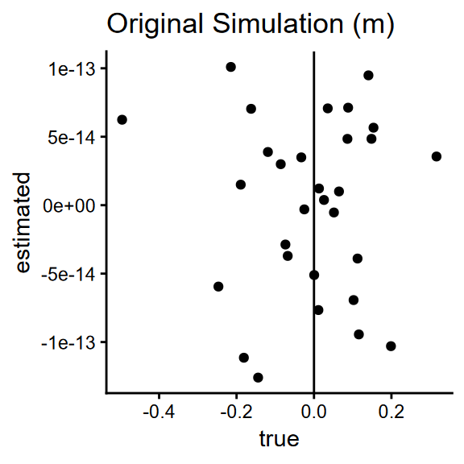
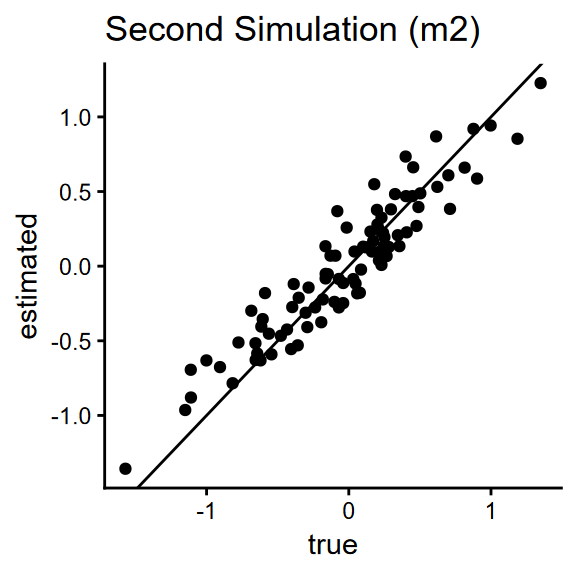

library(lme4) # for fitting LMMs
library(dplyr) # for data wrangling
library(tidyr) # for data wrangling
library(purrr) # for iterating
library(faux) # for simulating multivariate normals
library(lmerTest) # for calculating significance
library(broom.mixed) # for getting tidy summaries from models
library(parallel) # for parallelisation
library(ggplot2) # for plotting6 Binomial GLMMs
6.1 Packages
We’ll use the following packages in this section:
6.2 Non-Gaussian Variables
So far, we have fit models that assume the outcome is a continuous, normally distributed variable. However, we’re often interested in behaviours that produce variables for which this is not true.
A good example is accuracy. To use the Lexical Decision Task example again, we might be interested in not only how frequency affects response time in recognising a word, but also how it affects accuracy.
6.3 The Logit Link
We could use a linear model again, but this would produce unlikely or impossible predictions if we’re not careful. For example, there is nothing in a standard linear model that would clip the values to be between the minimum probaility (0) and the maximum (1). This means that if we’re not careful, we could get a linear model that predicts nonsense values:

As we saw briefly at the end of the last section, one common solution for binary outcomes is to use a logit link. Here, we transform probabilities into “logistic units”, or logits.
We can transform probabilities to logits using the transformation:
\[ logit(p) = log\left( \frac{Pr}{1-Pr} \right) \]
p2logit <- function(p) log(p / (1 - p))The inverse, to transform probabilities to logits, is therefore:
\[ Pr = \frac{1}{1 + exp(-x)} \]
logit2p <- function(x) 1 / (1 + exp(-x))This produces a sigmoid relationship that is clipped to [0, 1], where a logit of 0 has a probability of 0.5:
ggplot() +
geom_function(fun = logit2p) +
scale_x_continuous(limits = c(-10, 10)) +
labs(x = "logit", y = "Pr")
NoteThe probit link
Another common transformation for binary outcomes is the probit link. The logic is similar to that of the logit link, except that it transforms the probabilities to a continuous space using the cumulative distribution function for the normal distribution.
ggplot() +
geom_function(aes(colour="logit"), fun = logit2p) +
geom_function(aes(colour="probit"), fun = pnorm) +
scale_x_continuous(limits = c(-10, 10)) +
labs(y = "Pr", colour = NULL) +
theme(legend.position = "top")
6.4 Logit-Link GLMs
We can extend the linear model framework to use a logit link function, so that we can model probabilities based on observed events. When we fit a binomial generalised linear model (GLM), we can estimate how our variables affect logits, rather than raw probabilities.
\[\begin{aligned} \eta_i &= \beta_0 + \beta_1 Zipf_i \\\\ Pr_i &= \frac{1}{1 + exp(-\eta_i)} \end{aligned}\]
For example, we could calculate probabilities of correct responses for simulated items:
# high accuracy overall
b_0 <- 2.93
# effect of frequency
b_1 <- 1.07
# simulate items
n_items <- 50
items <- tibble(
i_id = 1:n_items,
zipf = runif(n_items, 1.5, 7.5),
# include a scaled version of Zipf
zipf_sc = scale(zipf)
)
# calculate probabilities
items <- items |>
mutate(
eta = b_0 + b_1 * zipf_sc,
Pr = 1 / (1 + exp(-eta))
)
# plot probabilities of correct responses over Zipf
ggplot(items, aes(zipf, Pr)) +
geom_line()
6.5 Logit-Link GLMMs
We’ve already seen that we can extend the simple linear model to account for mixed-effects models with a linear mixed-effects model. We can also extend a logit-link general linear model to a generalised linear mixed-effects model (GLMM) in the same way.
We can simply adapt the equations we’ve already built to include the logit link transformation to model the probability of a correct response, \(Pr_{ip}\):
\[\begin{aligned} Pr_{ip} &= \frac{1}{1 + exp(-\eta_{ip})} \\\\ \eta_{ip} &= \beta_0 + I_{0i} + P_{0p} + (\beta_1 + P_{1p}) Zipf_{ip} \\\\ I_{0i} &\sim \mathcal{N}(0, \sigma_{I0}) \\\\ \begin{pmatrix} P_{0p} \\ P_{1p} \end{pmatrix} &\sim \mathcal{N}\!\left(\mathbf{0},\, \Sigma_P\right) \\\\ \Sigma_P &= \begin{pmatrix} \sigma^2_{P0} & \rho_P \sigma_{P0} \sigma_{P1} \\ \rho_P \sigma_{P0} \sigma_{P1} & \sigma^2_{P1} \end{pmatrix} \end{aligned}\]
There is one key difference: we no longer simulate \(e_{ip}\).
Instead, we simulate such noise in the mapping from probabilities, Pr_{ip}, to observed binary outcomes or responses, \(Y_{ip}\) (e.g., whether the paricipant responded correctly):
\[ Y_{ip} \sim Bernoulli(Pr_{ip})\]
In R, we can implement this with the rbinom() function. In this function:
ndictates the number of observations to simulatesizedictates the number of binary events per trial (usually 1 for our purposes)probis a vector of probabilities (e.g.,Pr_{ip})
# some example probabilities
Pr <- c(0.99, 0.01, 0.5)
# simulate binary outcomes (size=2) from each probability
Y <- rbinom(n=length(Pr), size=1, prob=Pr)
print(Y)[1] 1 0 16.6 Simulating Logit-Link GLMMs
Using what we have covered in the workshop, try to write a function to simulate data from a binomial GLMM for the effect of word frequency on lexical decision accuracy. You could use some parameters I suggest below, or try to come up with your own.
Show trial simulations function
sim_trials <- function(
# fixed effects
b_0 = 2.93,
b_1 = 1.07,
# numbers of items & participants
n_items = 50,
n_participants = 30,
# SD of item intercepts
s_I0 = 0.08,
# SDs of participant intercepts & slopes
s_P0 = 0.16,
s_P1 = 0.04,
# random correlation for participant intercepts & slopes
r_P = -0.28
) {
# simulate items
items <- tibble(
i_id = 1:n_items,
zipf = runif(n_items, 1.5, 7.5),
I_0i = rnorm(n_items, 0, s_I0)
) |>
mutate(zipf_sc = scale(zipf))
# simulate participants
participants <- rnorm_multi(
n = n_participants,
vars = 2,
varnames = c("P_0p", "P_1p"),
mu = c(0, 0),
sd = c(s_P0, s_P1),
r = r_P
) |>
mutate(p_id = 1:n_participants)
# generate trials
trials <- crossing(items, participants) |>
mutate(
eta_ip = b_0 + I_0i + P_0p + (b_1 + P_1p) * zipf_sc,
Pr_ip = 1 / (1 + exp(-eta_ip)),
is_correct = rbinom(n=n(), size=1, prob=Pr_ip)
)
trials
}trials <- sim_trials()
print(trials)# A tibble: 1,500 × 10
i_id zipf I_0i zipf_sc[,1] P_0p P_1p p_id eta_ip[,1] Pr_ip[,1]
<int> <dbl> <dbl> <dbl> <dbl> <dbl> <int> <dbl> <dbl>
1 1 6.46 -0.0598 1.24 -0.496 0.00513 6 3.71 0.976
2 1 6.46 -0.0598 1.24 -0.247 0.0376 20 4.00 0.982
3 1 6.46 -0.0598 1.24 -0.215 0.0554 7 4.05 0.983
4 1 6.46 -0.0598 1.24 -0.189 0.0198 21 4.03 0.983
5 1 6.46 -0.0598 1.24 -0.181 -0.0105 27 4.00 0.982
6 1 6.46 -0.0598 1.24 -0.162 0.0118 24 4.05 0.983
7 1 6.46 -0.0598 1.24 -0.144 0.0707 14 4.14 0.984
8 1 6.46 -0.0598 1.24 -0.119 0.101 4 4.20 0.985
9 1 6.46 -0.0598 1.24 -0.0859 -0.0318 23 4.07 0.983
10 1 6.46 -0.0598 1.24 -0.0738 0.0184 17 4.15 0.984
# ℹ 1,490 more rows
# ℹ 1 more variable: is_correct <int>6.7 Fitting the GLMM
Whereas we fit the linear mixed-effects models with lme4::lmer(), we fit the generalised linear mixed-effects models with lme4::glmer(). Here (as with glm()), we have to provide the model family as binomial with a logit link. The syntax of the formula is identical.
m <- glmer(
is_correct ~ 1 + zipf_sc +
(1 | i_id) +
(1 + zipf_sc | p_id),
family = binomial("logit"),
data = trials
)boundary (singular) fit: see help('isSingular')summary(m)Generalized linear mixed model fit by maximum likelihood (Laplace
Approximation) [glmerMod]
Family: binomial ( logit )
Formula: is_correct ~ 1 + zipf_sc + (1 | i_id) + (1 + zipf_sc | p_id)
Data: trials
AIC BIC logLik -2*log(L) df.resid
795.3 827.2 -391.7 783.3 1494
Scaled residuals:
Min 1Q Median 3Q Max
-8.5469 0.1309 0.2678 0.3462 0.5899
Random effects:
Groups Name Variance Std.Dev. Corr
i_id (Intercept) 0.000e+00 0.000e+00
p_id (Intercept) 4.687e-14 2.165e-07
zipf_sc 4.087e-14 2.022e-07 1.00
Number of obs: 1500, groups: i_id, 50; p_id, 30
Fixed effects:
Estimate Std. Error z value Pr(>|z|)
(Intercept) 2.7884 0.1324 21.055 <2e-16 ***
zipf_sc 1.0825 0.1324 8.174 3e-16 ***
---
Signif. codes: 0 '***' 0.001 '**' 0.01 '*' 0.05 '.' 0.1 ' ' 1
Correlation of Fixed Effects:
(Intr)
zipf_sc 0.694
optimizer (Nelder_Mead) convergence code: 0 (OK)
boundary (singular) fit: see help('isSingular')The fixed effects are retrieved fairly well, but note that the random-effects estimates are quite far off in this simulation. These estimates will also be very variable between simulations. This is something you might see quite often: compared to continuous outcome variables, binomial outcomes offer much less information from a single trial, and these make it hard to estimate complex random effects structures accurately from a single dataset. (Although it should approximate the true parameters in the long run).
Estimating the random effects variance is especially difficult in a situation where there is a ceiling or floor effect. In our study, 91.5% of observations are 1s, because our simulated participants are performing the task very well overall:
mean(trials$is_correct)[1] 0.9146667This is a typical level of accuracy for a lexical decision task. However, we might want to design a study that better allows us to estimate participant and item variability specifically.
We could, for example, design a study with:
- Harder task/items overall (e.g., performing around 60% accuracy overall, so \(\beta_0\) of arounf 0.4)
- More variability between items and participants (increase \(\sigma_{i0}\), \(\sigma_{p0}\), and \(\sigma_{p1}\))
- A larger sample size of items and participants
We can then more easily get enough information to retrieve these parameters more accurately from a single study or simulation.
trials2 <- sim_trials(
b_0=0.4, s_I0=0.5, s_P0=0.5, s_P1=0.25, n_items=150, n_participants=90
)
m2 <- glmer(
is_correct ~ 1 + zipf_sc +
(1 | i_id) +
(1 + zipf_sc | p_id),
family = binomial("logit"),
data = trials2
)
summary(m2)Generalized linear mixed model fit by maximum likelihood (Laplace
Approximation) [glmerMod]
Family: binomial ( logit )
Formula: is_correct ~ 1 + zipf_sc + (1 | i_id) + (1 + zipf_sc | p_id)
Data: trials2
AIC BIC logLik -2*log(L) df.resid
14764.7 14809.8 -7376.4 14752.7 13494
Scaled residuals:
Min 1Q Median 3Q Max
-4.3817 -0.6978 0.3306 0.6234 4.2157
Random effects:
Groups Name Variance Std.Dev. Corr
i_id (Intercept) 0.24879 0.4988
p_id (Intercept) 0.26196 0.5118
zipf_sc 0.03756 0.1938 -0.42
Number of obs: 13500, groups: i_id, 150; p_id, 90
Fixed effects:
Estimate Std. Error z value Pr(>|z|)
(Intercept) 0.43106 0.07091 6.079 1.21e-09 ***
zipf_sc 1.14219 0.05146 22.195 < 2e-16 ***
---
Signif. codes: 0 '***' 0.001 '**' 0.01 '*' 0.05 '.' 0.1 ' ' 1
Correlation of Fixed Effects:
(Intr)
zipf_sc -0.0976.8 Exercises
Using the ranef() function, we can retrieve the specific estimates for individual participants and items. For example, we can get per-participant random effects from m2 like so:
head( ranef(m2)$p_id ) # show the first few rows (Intercept) zipf_sc
1 0.36857734 -0.19067551
2 0.09804015 -0.12028449
3 -0.11649789 0.04233486
4 0.12632029 -0.19271289
5 -0.40832683 -0.10839372
6 -0.08221408 -0.10122699We can use this to see how well our model is retrieving the random effects we actually simulate. Reproduce the following plots comparing the parameter retrieval between m and m2 for participant random intercepts:
Show solution
# get the participant random effects from m
m_est <- ranef(m)$p_id |>
as_tibble(rownames="p_id") |>
rename(estimated = `(Intercept)`)
# get all unique participants and their "true" random intercepts from trials
m_true <- trials |>
distinct(p_id, P_0p) |>
rename(true = P_0p) |>
# convert p_id to character, to match m_est
mutate(p_id = as.character(p_id))
# plot the correspondence
left_join(m_est, m_true, by="p_id") |>
ggplot(aes(true, estimated)) +
geom_point() +
geom_abline(intercept=0, slope=1) +
labs(title = "Original Simulation (m)")
# do the same for m2 and trials2
m_est2 <- ranef(m2)$p_id |>
as_tibble(rownames="p_id") |>
rename(estimated = `(Intercept)`)
m_true2 <- trials2 |>
distinct(p_id, P_0p) |>
rename(true = P_0p) |>
mutate(p_id = as.character(p_id))
left_join(m_est2, m_true2, by="p_id") |>
ggplot(aes(true, estimated)) +
geom_point() +
geom_abline(intercept=0, slope=1) +
labs(title = "Second Simulation (m2)")

This shows very clearly that our model fit to the second simulation is much able to much better estimate such random effects. If these are parameters we want to estimate precisely, we could run a large number of simulations for different combinations of parameters. Instead of recording significance, we could then record the correlation between “true” and estimated random effects of interest. As with the power analysis, we could use such simulations to decide on a suitable study design.
6.9 More than Two Response Options
What about when, rather than two possible responses (e.g., correct/incorrect), we want to model an ordinal variable. A common example might be studies where we ask participants to rate items. For example, a rating scale from 1 to 5 is ordinal because 1<2<3<4<5. In this case there are powerful extensions that build on the logic of the Bernoulli/binomial model to describe ordinal responses (Bürkner and Vuorre 2019).
For example, Cumulative-link Mixed-Effects Models (CLMMs) allow us to simulate realistic ratings data, and analyse ratings data in a much more robust and meaningful way. In particular, models like CLMMs can help us avoid distortions that come from treating ordinal variables as though they are continuous (Liddell and Kruschke 2018; Taylor et al. 2023).